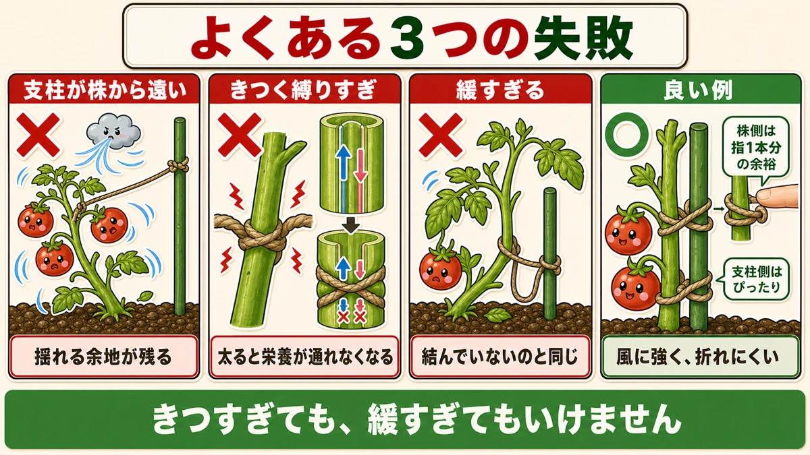
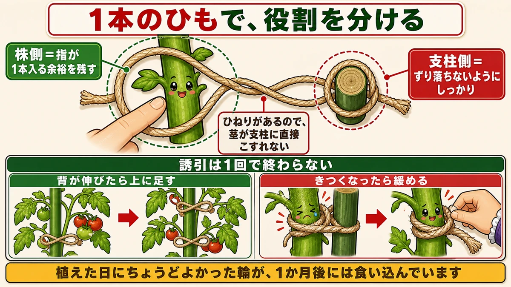
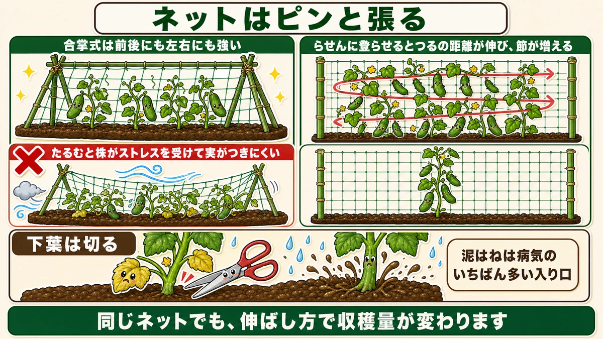
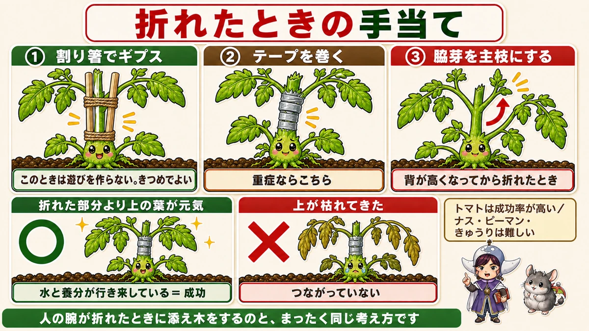

株側はゆるく、支柱側はきつく🌿 誘引はこれだけ覚えてください

🗨️「支柱に結ぶだけでしょ？」
🗨️「風でトマトが折れてしまった」
🗨️「きゅうりの花は咲くのに、実にならない」
どうも、8150（えいこう）です🌱 家庭菜園歴8年、理科の教員免許を持っていて、有機・無農薬で野菜を育てています。
前回、苗の植え方の話をしました。最後の手順が「支柱を立てる」でした。今日はその続きです。
支柱に結ぶ作業を、誘引（ゆういん）と言います。簡単に見えますが、★ここで差がつきます。
先に、この記事でいちばん言いたいことを言っておきます。
★株側はゆるく、支柱側はきつく。
これだけ覚えて帰っていただければ、今日は十分です☺️

よくある3つの失敗
①支柱が、株から遠い
まず多いのがこれです。
苗のそばに支柱を立てたつもりでも、10cm、15cmと離れていることがあります。そこから長いひもを渡して結ぶ。
★これでは、株はまだ揺れます。
誘引の目的は、風で株が揺すられないようにすることです。ひもが長いと、その分だけ振り子のように動きます。★支柱が遠いということは、揺れる余地を残したままということです。
支柱は、★株のすぐ近くを通してください。
②★茎を、きつく縛りすぎている
これがいちばん見落とされます。
しっかり固定しよう、と思ってぎゅっと結ぶ。植えた日は、それで問題ありません。
でも★茎は太ります。
1か月後、その茎は倍近い太さになっています。ひもの輪の大きさは変わりません。すると、どうなるか。
★茎が締めつけられて、栄養が上下に移動できなくなります。
茎の中には、水を上げる管と、葉で作った糖を下ろす管が通っています。外から締めつけると、そこで流れが止まります。★上のほうだけ元気で、下が細いまま、という株になります。
③緩すぎる
逆に、遠慮して緩く結びすぎるのもだめです。
★ひもと支柱の意味がなくなります。風が吹けば、結んでいないのと変わりません。
きつすぎても、緩すぎてもいけない。じゃあどうするのか。ここが今日の本題です。
★答えは「株側はゆるく、支柱側はきつく」
1本のひもで、役割を分ける
良い誘引は、こうなっています。
- ★支柱が、株のすぐ近くを通っている
- ★ひもが、株と支柱を短い距離で結んでいる
- ★株を結ぶ側には、少し遊びがある
- ★支柱を結ぶ側は、しっかり固定されている

つまり★1本のひもの中で、両端の役割を変えています。
株側 … 茎が太っても大丈夫なように、指が1本入るくらいの余裕を残す
支柱側 … ずり落ちないように、しっかり結ぶ
8の字に結ぶ、という言い方
この結び方は、8の字結びとも呼ばれます。
ひもを支柱と茎のあいだで一度ひねって、8の字の形にする。すると★2つの輪ができて、それぞれの大きさを変えられます。
茎側の輪を大きく、支柱側の輪を小さく。ひねりがあることで、茎が支柱に直接こすれるのも防げます。
★名前は覚えなくて大丈夫です。「株側はゆるく、支柱側はきつく」が守れていれば、結び方は何でも構いません。
★誘引は、1回で終わらない
もうひとつ大事なことがあります。
★誘引は、植えた日に済ませる作業ではありません。
株は伸びます。伸びた分だけ、上のほうに新しい結び目が必要になります。
- ★背が伸びたら、上に足す
- ★きつくなっていたら、緩める
とくに2つ目です。★過去に結んだ場所を、ときどき見てください。植えた日にちょうどよかった輪が、1か月後には食い込んでいることがあります。
★きゅうりは、誘引が遅れると実がつかない
遅れると起きること、3つ
きゅうりのようにネットを登る野菜では、誘引の遅れがはっきり結果に出ます。
★1. あとから持ち上げると、折れる
放っておいたつるを、あとからネットに絡ませようとする。★持ち上げる力がかかって、葉や茎が折れます。
★2. つるがぐしゃぐしゃになる
伸びるままにしておくと、つるが絡み合います。★風が通らなくなって、病気が出やすくなります。
★3. ★受粉がうまくいかない
これは意外でした。
つるが地面近くでこんがらがっていると、★その場所は湿度が高くなります。すると、花粉が飛びません。蜂やハエが来ても、花粉が付着しにくい。
★水分が多いと、自分の花粉で受粉する場合でもうまくいかず、実になりません。
「花は咲くのに実がつかない」の原因が、誘引の遅れだったということがあるんです。
ネットの張り方
★ピンと張る
ネットを使うときのコツは、ひとつだけです。
★ピンと張ってください。

ネットがたるんでいると、風であおられます。そこにつるが絡んでいるので、★株ごと揺すられ続けることになります。
そして★ストレスを受けた株は、実がつきにくくなると言われています。
張るのは、最初はちょっと難しく感じます。でも★ここを丁寧にやるかどうかで、夏の収穫が変わります。
合掌式が、いちばん扱いやすい
支柱の組み方はいくつかありますが、家庭菜園なら★合掌式をおすすめします。
うねの両側から支柱を斜めに立てて、上で交差させ、そこに横棒を渡す。テントの骨組みのような形ですね。
★前後にも左右にも強いのが利点です。まっすぐ立てただけの支柱は、横風に弱い。
★らせんに登らせると、収穫量が増える
これは知っておくと得をします。
つるを伸ばす方向を、あらかじめ決めてください。
- 成長点を右へ誘引する
- ネットの端まで来たら、今度は左へ
- ★それを繰り返して、らせん状に登らせる
なぜこうするか。★まっすぐ上へ伸ばすより、つるが通る距離が長くなるからです。
きゅうりは、つるの節ごとに実をつけます。★距離が伸びる＝節が増える＝収穫量が増えるということです。
同じネットでも、伸ばし方で収穫量が変わります。
下葉は、切る
もうひとつ、誘引を始めたらセットでやることがあります。
★下のほうの葉をカットしてください。
理由は2つです。
- ★下から徐々に枯れてくる。枯れた葉は病気の元になる
- ★下の葉は、もう役割を終えている
上のほうの若い葉が光合成の主役です。★下の古い葉は、日陰になっていてほとんど働いていません。残しておく理由がありません。
そして、切ることで★地面と葉のあいだに空間ができます。雨で泥がはねても、葉に付きにくくなる。★泥はねは、病気のいちばん多い入り口です。
それでも折れたときは
トマトなら、かなり助かる
どれだけ気をつけても、強風で折れることはあります。
そのときの手当てです。
★トマトは、成功率が高いです。
一方、★ナス・ピーマン・きゅうりは、正直あまりうまくいきません。一か八かのつもりでやってみてください。

方法1：割り箸でギプス
軽く折れた（完全に切れていない）場合です。
- ★折れた場所の両側に、割り箸を2本立てる
- ★2本の間をなるべく狭くして、茎がまっすぐになるように固定する
- 麻ひもで、折れた部分の上をしっかり結ぶ
人の腕が折れたときに添え木をするのと、まったく同じ考え方です。
ここでひとつ、★誘引とは逆になることがあります。
★このときは遊びを作りません。きつめに固定して構いません。
目的が違うからです。誘引は「太る余地を残す」、ギプスは「くっつけるまで動かさない」。
方法2：テープを巻く
もっとはっきり折れている場合は、テープを使います。
園芸用テープかビニールテープを、★折れた部分に直接巻きつけます。弱いと思ったら2〜3周しても問題ありません。
★成功したかどうかの見分け方
数日後、こう判断します。
- ★折れた部分より上の葉が元気なら、成功。水と養分が上下に行き来しています
- ★上が枯れてきたら、つながっていません
うまくいかなかったときは、あきらめるのもひとつの判断です。★植えた直後で背が低いなら、植え直すほうが早いこともあります。
背が高くなってからなら、脇芽を使う
もうひとつ手があります。
★折れた場所の下から出てくる脇芽を伸ばして、そこを新しい主枝にする。
トマトは脇芽がどんどん出る野菜です。★上を失っても、下から作り直せます。ある程度育ってから折れた場合は、こちらのほうが確実なことがあります。
芽かきのときにも折れます
最後にひとつ。
★トマトは、脇芽をかくときに誤って主枝を折ることがあります。
私も何度かやりました。手が滑って、ぽきっと。あのときの気持ちは、なかなかのものです。
★この手当てを知っていると、その瞬間の絶望が小さくなります。覚えておいて損はありません。
植えた日にやること
この記事の要点
- ★誘引の答えは「株側はゆるく、支柱側はきつく」
- 悪い例① ★支柱が株から遠い → 揺れる余地が残る
- 悪い例② ★きつく縛りすぎ → 茎が太って締めつけられ、★栄養が上下に移動できなくなる
- 悪い例③ 緩すぎる → ひもと支柱の意味がない
- ★株側は指が1本入るくらいの遊び、支柱側はしっかり
- ★8の字に結ぶと2つの輪の大きさを変えられる（名前は覚えなくていい）
- ★誘引は1回で終わらない。★背が伸びたら足し、★きつくなったら緩める
- きゅうりの誘引が遅れると ①持ち上げて折れる ②通気性が落ちる ③★受粉しない
- ★湿度が高いと花粉が飛ばず、蜂やハエにも付着しない
- ★ネットはピンと張る。たるむと風であおられて株がストレスを受ける
- ★合掌式は前後左右に強く、家庭菜園でやりやすい
- ★らせんに登らせるとつるの距離が伸び、節が増えて収穫量が増える
- ★下葉は切る。役割を終えているうえ、★泥はねが病気の入り口になる
- 折れたら ★トマトは成功率が高い／ナス・ピーマン・きゅうりは難しい
- ★割り箸でギプス（このときは遊びを作らない・きつめでよい）／重症ならテープを巻く
- ★上の葉が元気なら成功、枯れてきたら失敗
- ★背が高くなってからなら、下から出る脇芽を新しい主枝にする
全部やろうとしなくて大丈夫です。まずは今ある結び目をひとつ、指で触ってみてください。★指が1本入らないなら、結び直しどきです🌿
次回は、春の虫の話。苗が小さいこの時期にだけ効く、見つけ方をお話しします🐛
ここまで読んでくださって、ありがとうございました。
麻ひも
株側はゆるく、支柱側はきつく。麻ひもはそのゆるさを作りやすく、シーズンが終わればそのまま土に還ります。
![[商品価格に関しましては、リンクが作成された時点と現時点で情報が変更されている場合がございます。]](https://hbb.afl.rakuten.co.jp/hgb/56bc2b48.a5f55627.56bc2b49.c4ff0d7c/?me_id=1372205&item_id=10005292&pc=https%3A%2F%2Fthumbnail.image.rakuten.co.jp%2F%400_mall%2Faudiofuntech%2Fcabinet%2Fproducts%2Fetc%2Fetc06%2F7052-1.jpg%3F_ex%3D240x240&s=240x240&t=picttext "[商品価格に関しましては、リンクが作成された時点と現時点で情報が変更されている場合がございます。]")

支柱150cm
仮支柱にちょうどいい長さです。本支柱に切り替えるまでの1か月を支えます。
![[商品価格に関しましては、リンクが作成された時点と現時点で情報が変更されている場合がございます。]](https://hbb.afl.rakuten.co.jp/hgb/56d221a0.da732c49.56d221a1.b57a6709/?me_id=1230952&item_id=10017113&pc=https%3A%2F%2Fthumbnail.image.rakuten.co.jp%2F%400_mall%2Fnou-nou%2Fcabinet%2F5010356000109-01.jpg%3F_ex%3D240x240&s=240x240&t=picttext "[商品価格に関しましては、リンクが作成された時点と現時点で情報が変更されている場合がございます。]")
支柱クリップ
ひもが苦手なら、これで留めるだけでも構いません。茎を締めつけないのが利点です。

きゅうりネット
きゅうりは誘引が遅れると実がつきません。植えたらすぐ張ってください。
![[商品価格に関しましては、リンクが作成された時点と現時点で情報が変更されている場合がございます。]](https://hbb.afl.rakuten.co.jp/hgb/56d221a0.da732c49.56d221a1.b57a6709/?me_id=1230952&item_id=10006162&pc=https%3A%2F%2Fthumbnail.image.rakuten.co.jp%2F%400_mall%2Fnou-nou%2Fcabinet%2Fnousi2%2F0108008000005.jpg%3F_ex%3D240x240&s=240x240&t=picttext "[商品価格に関しましては、リンクが作成された時点と現時点で情報が変更されている場合がございます。]")
あわせて読みたい